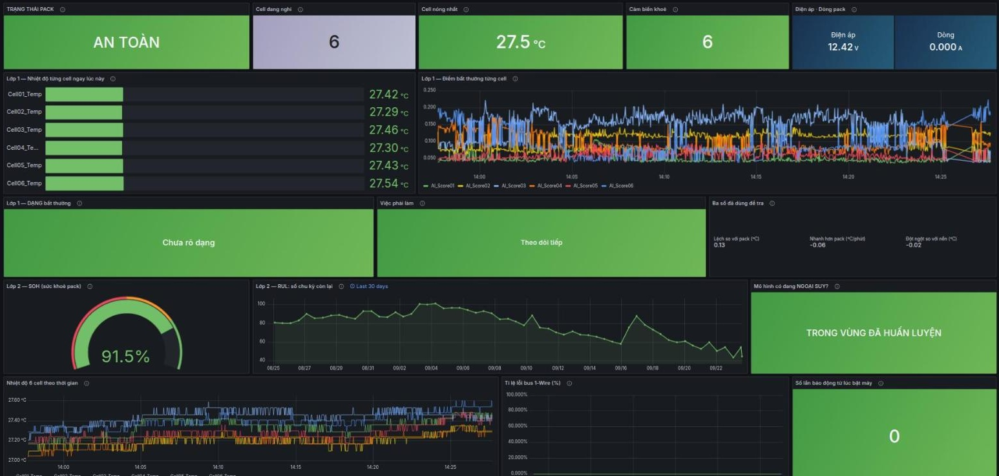
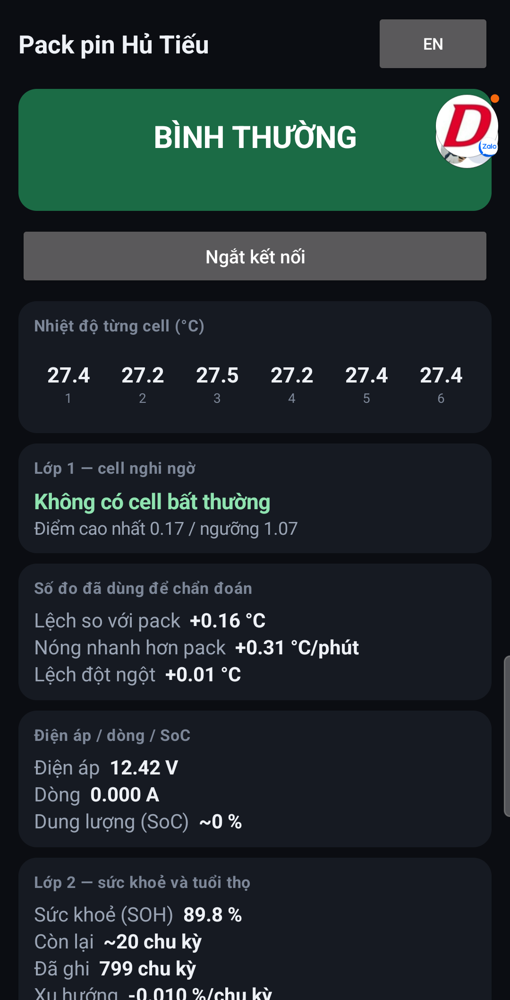

Đám cháy pin nào cũng bắt đầu từ một cell nóng hơn phần còn lại. Chúng tôi đo từng cell, và AI ngay trên chip nhận ra cell đó khi nó mới lệch vài độ — còn rất xa ngưỡng 60 °C.
So mỗi cell với phần còn lại của pack. Phân biệt nóng vọt (cách ly ngay), ấm ổn định (theo dõi) và lạnh bất thường (hở mối nối). Mất mạng vẫn chạy.
Từ mỗi lần sạc, ước lượng sức khoẻ pin (SOH) và số chu kỳ còn lại (RUL) — và tự báo khi dữ liệu nằm ngoài vùng nó đã học.
Còi + đèn cho người đứng cạnh. App điện thoại qua Bluetooth cho thợ. Dashboard cloud cho người quản lý đội xe.

Dashboard cloud — nhiệt độ từng cell, điểm AI Lớp 1, sức khoẻ và tuổi thọ Lớp 2. Song ngữ Việt/Anh.

App Android — đọc pack qua Bluetooth, không cần mạng.
Phạm Văn Huynh · Phạm Minh Tú · Đàm Đức Đôn · Hoàng Văn Huy · Nguyễn Hoàng Anh Tuấn
GVHD: Đào Thị Hằng